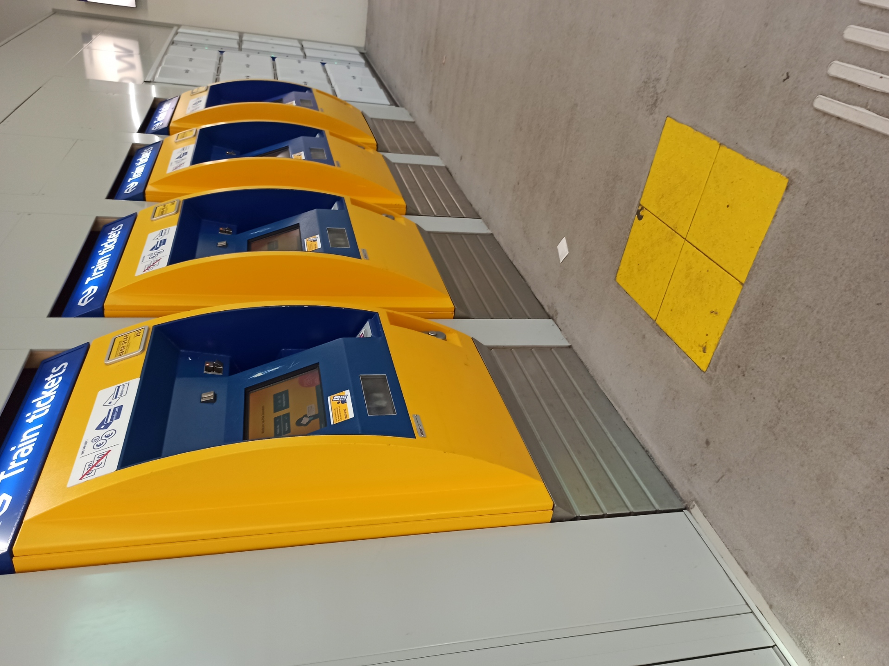
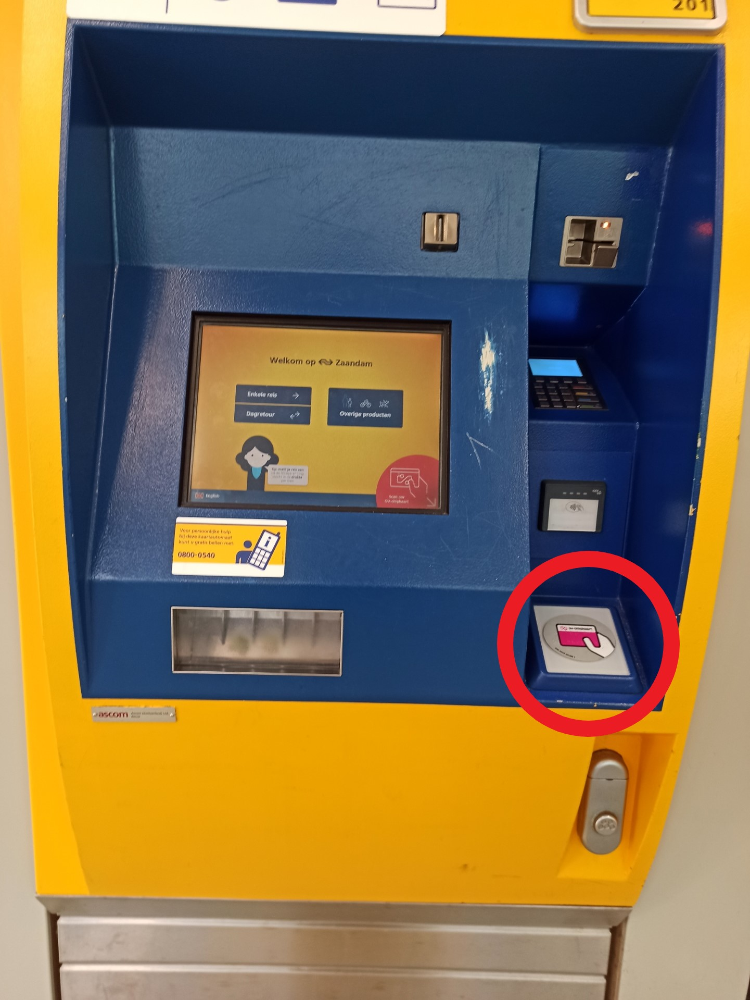
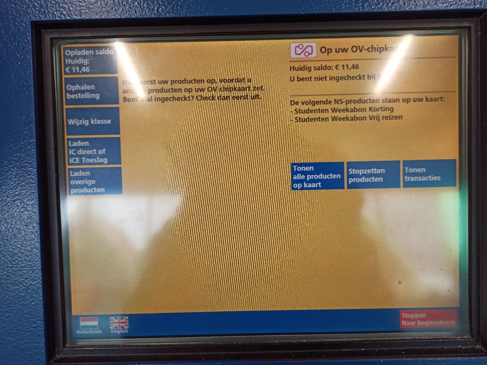
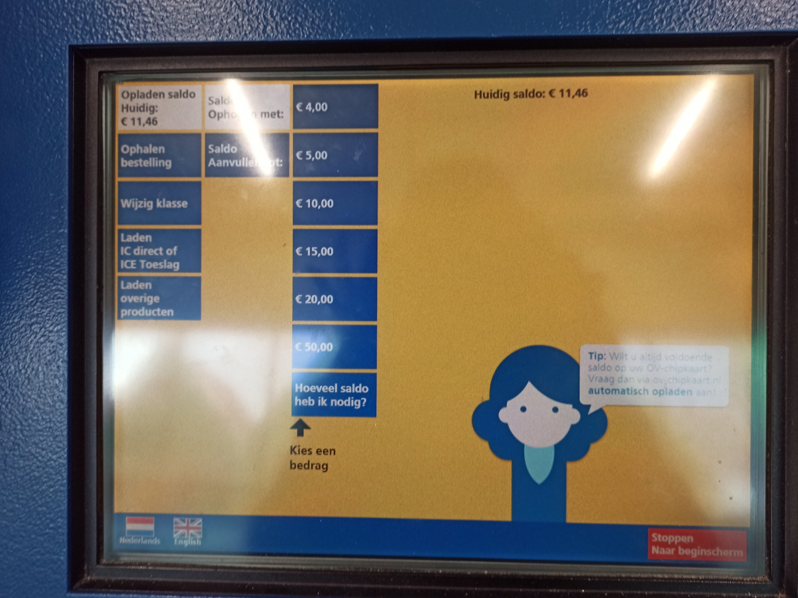
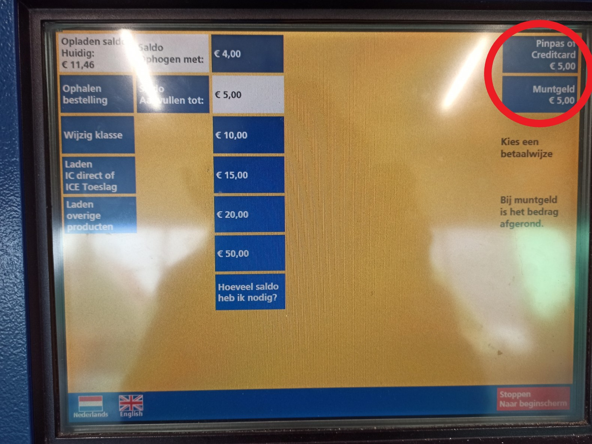
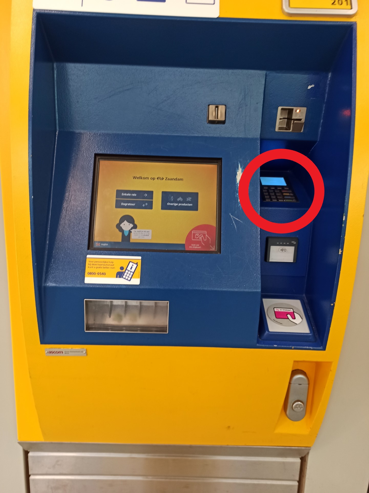

How can you upload your OV card?
There are several ways to load your OV card. You can choose autoload, which is the simplest way to never have to think about credit. Or you can load your card using a OV automat at the station. I will tell you step by step how to download from a OV automat.
-
Find an automat
First of all you have to find an OV automaton. Thanks to the machine you are looking for, you will have the chance to load money on your OV card and travel. This is a very simple and practical way to do.
-
Read your OV card
The first screen you see of the OV automat will look like this (You can also change the language). Now all you have to do is insert (or swipe) which card you want to load money into, in the card reader section of the vending machine.
-
Click on "upload saldo"
When you swipe your card you should see a screen like this. Now click on "upload saldo". If you have ordered saldo from the internet, just press download saldo, then you will see that the money has been deposited in your account.
-
Choose the amount of money
Now you can choose one of the options it offers you. If you want to add a different amount, press the button at the end and enter the amount you need.
-
Choose the payment way
Now you can choose one of the options it offers you. If you want to add a different amount, press the button at the end and enter the amount you need.
-
Follow the instructions of the pay terminal
Follow the payment terminal instructions. It is usually located in the space on the right side of the main screen.
-
Read your card again
Finally, make read the same card again to make sure the machine loads the money on the correct card. You will see a page about the successful upload. There you can see the total amount in your account. After completing the control process, you complete your transaction completely by pressing the next customer button. Congratulations!